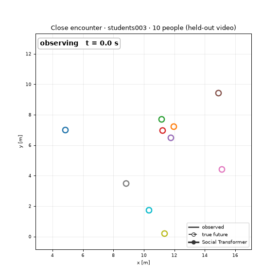
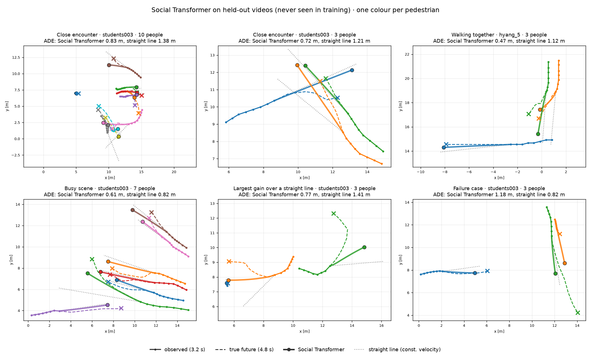
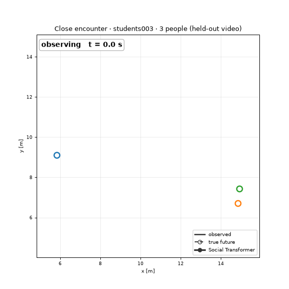
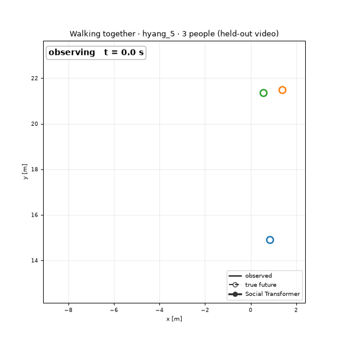
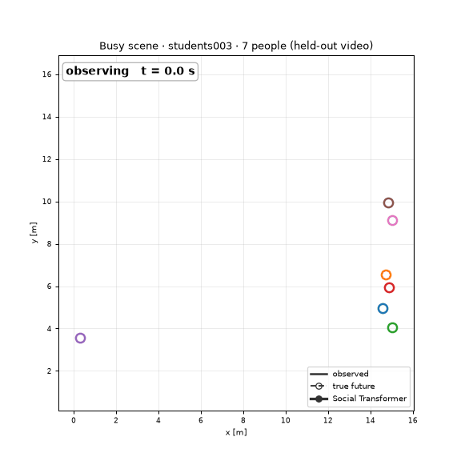
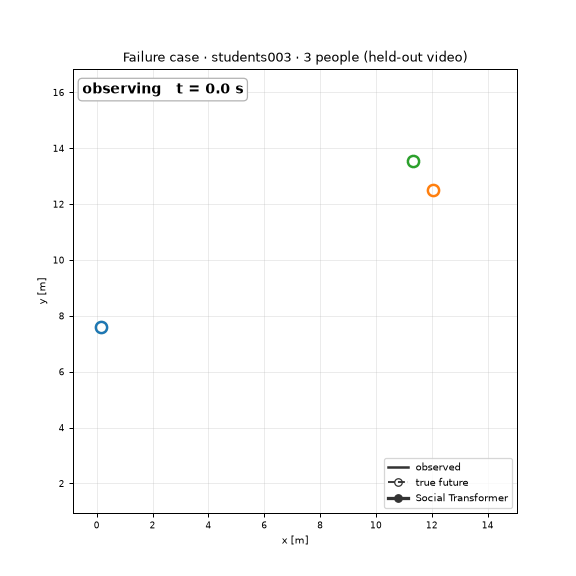
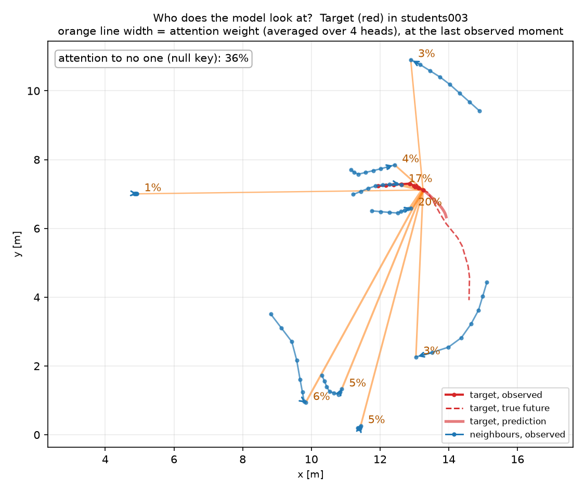

Ten students in two streams that cross. The predicted paths bend with the real ones instead of shooting off in straight lines.
ADE 0.83 m model · 1.38 m straight line
ME496 UGP · Deep Learning for Crowd Modelling
The trained Social Transformer replaying real scenes it has never seen. Every person is watched for 3.2 seconds; the model then predicts their next 4.8 seconds, and we compare that with where they actually walked.
One colour per person. In the animations, a filled dot is the prediction and a hollow ring is where the person really was at that moment. ADE is the average distance between the two over the 4.8 seconds.

simulate_scenes.py from scenes with 3–10 people.Each animation plays the 3.2 s the model observes, then the 4.8 s it predicts, in real time. The clock in the corner shows which phase you are watching.

Ten students in two streams that cross. The predicted paths bend with the real ones instead of shooting off in straight lines.
ADE 0.83 m model · 1.38 m straight line

A pair walking together cuts across a third person’s path. The pair is predicted well. The third person’s late swerve is missed: the model keeps them going straight.
ADE 0.72 m model · 1.21 m straight line

Two people walking side by side on the Stanford campus, plus a third walker. The straight line overshoots; the model stays close.
ADE 0.47 m model · 1.12 m straight line

Seven people moving through the same area, mostly in one direction. The gain over a straight line is smaller here, because most of them really do walk fairly straight.
ADE 0.61 m model · 0.82 m straight line

The model expected the walker in green to slow down near the others; they kept walking. Here a straight line is better. It is the worst scene of the selection, shown on purpose.
ADE 1.18 m model · 0.82 m straight line

This is the social part of the model made visible. For one walker in the ten-person scene (red), each orange line is the share of attention given to a neighbour at the last observed moment, averaged over the four attention heads.
The two people walking right beside the target get the most attention, 20 % and 17 %. People several metres away get 1–6 %. The largest share, 36 %, goes to the learned “no one” option: much of what this person does next is explained by their own movement.
That matches the numbers in the report. Neighbours help, but modestly, and mainly when they are close.
| Scene | Video | Start frame | People | ADE model | ADE straight line |
|---|---|---|---|---|---|
| Close encounter | students003 | 400 | 10 | 0.83 | 1.38 |
| Close encounter | students003 | 2050 | 3 | 0.72 | 1.21 |
| Walking together | hyang_5 | 3228 | 3 | 0.47 | 1.12 |
| Busy scene | students003 | 2310 | 7 | 0.61 | 0.82 |
| Largest gain | students003 | 2390 | 3 | 0.77 | 1.41 |
| Failure case | students003 | 3440 | 3 | 1.18 (worse) | 0.82 |
These six scenes are chosen to illustrate behaviour, so they are not a fair sample. The fair, overall numbers are the ones in the report: Avg 1.020 m on the held-out videos, 13 % below a straight line.
04_results/cpu_full_study/holdout/social_tf/best.pt), run as-is on CPU, without test-time augmentation.cd 03_improved_model && python simulate_scenes.pyAbout 4 minutes on a laptop CPU. Writes the gallery, one PNG per scene, the attention figure, the GIFs and scenes.csv to 04_results/simulations/.